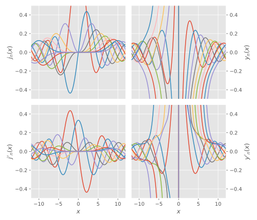

SphericalBesselFunctions.jl
SphericalBesselFunctions.bessel_fractionSphericalBesselFunctions.besselsSphericalBesselFunctions.bessels!SphericalBesselFunctions.bessels!SphericalBesselFunctions.lentz_thompsonSphericalBesselFunctions.powneg1SphericalBesselFunctions.reflect!
Usage
x = range(-12, stop=12, length=1000)
nℓ = 10
j, j′, y, y′ = bessels(x, nℓ)
Accuracy
To check the accuracy, we compare with SpecialFunctions.jl, which however does not provide the spherical Bessel functions but the ordinary (cylindrical) ones. They are however related as
Furthermore, SpecialFunctions.jl does not provide the derivatives out-of-the-box, but they are easily found using the recurrence relation.:
This time, we investigate a larger domain of parameters, but avoid smaller values of $x$ than $0.1$ since that does not seem to work in SpecialFunctions.jl (SphericalBesselFunctions.jl works at $x\leq0$ as well; however the combination large $n$ and small $|x|$ is still problematic):
nx = 1001
x = 10 .^ range(-1, stop=4, length=nx)
nℓ = 105
j, j′, y, y′ = bessels(x, nℓ)We note that SphericalBesselFunctions.jl seems to be ~3 times faster than SpecialFunctions.jl when evaluating all Bessel functions for a fixed value of $x$, most likely due to extra processing taking place when SpecialFunctions.jl does not compute all values simultaneously, but one order at a time:
SphericalBesselFunctions.jl:
BenchmarkTools.Trial:
memory estimate: 0 bytes
allocs estimate: 0
--------------
minimum time: 76.331 μs (0.00% GC)
median time: 77.057 μs (0.00% GC)
mean time: 80.337 μs (0.00% GC)
maximum time: 197.715 μs (0.00% GC)
--------------
samples: 10000
evals/sample: 1SpecialFunctions.jl:
BenchmarkTools.Trial:
memory estimate: 0 bytes
allocs estimate: 0
--------------
minimum time: 170.295 μs (0.00% GC)
median time: 185.132 μs (0.00% GC)
mean time: 193.312 μs (0.00% GC)
maximum time: 442.129 μs (0.00% GC)
--------------
samples: 10000
evals/sample: 1Finally, the agreement for the (irregular) Neumann functions for $x < 100$ is terrible, unclear why. But they are irregular (diverging) as $x$ tends to zero.
Reference
SphericalBesselFunctions.bessels! — Methodbessels!(j, j′, y, y′, x::AbstractVector; kwargs...)Loop through all values of x and compute all Bessel and Neumann functions, storing the results in the preallocated matrices j, j′, y, y′.
SphericalBesselFunctions.bessels! — Methodbessels!(j, j′, y, y′, x)Compute all spherical Bessel (regular: $j_n$) and Neumann (irregular: $y_n$) functions and their derivatives at x and store the results in the vectors j, j′, y, y′. If only the Bessel functions or the Neumann functions are of interest, the other pair of arrays can be substituted by nothing. However, it is not possible to compute only the functions but not the derivatives, since they are generated using the following recurrence relations:
These recurrence relations are employed in a downward fashion for the Bessel functions and an upward fashion for the Neumann functions.
It is assumed that all passed arrays are of the same lengths (not checked).
SphericalBesselFunctions.bessels — Methodbessels(x::AbstractVector, nℓ; kwargs...)Convenience wrapper around bessels! that preallocates output matrices of the appropriate dimensions.
SphericalBesselFunctions.bessel_fraction — Methodbessel_fraction(x, n)Evaluated the continued fraction for the spherical Bessel function
where
SphericalBesselFunctions.lentz_thompson — Methodlentz_thompson(b₀, a, b)Lentz–Thompson algorithm for the forward evaluation of continued fractions:
As described in
- Barnett, A. R. (1996). The Calculation of Spherical Bessel and Coulomb Functions. In (Eds.), Computational Atomic Physics (pp. 181–202). Springer Berlin Heidelberg.
SphericalBesselFunctions.powneg1 — Methodpowneg1(m)Returns an integer power of negative unity, i.e. $(-)^n$.
SphericalBesselFunctions.reflect! — Functionreflect!(g, g′, offset=0)Affect the reflection symmetries
where the $+1$ can be added using offset.